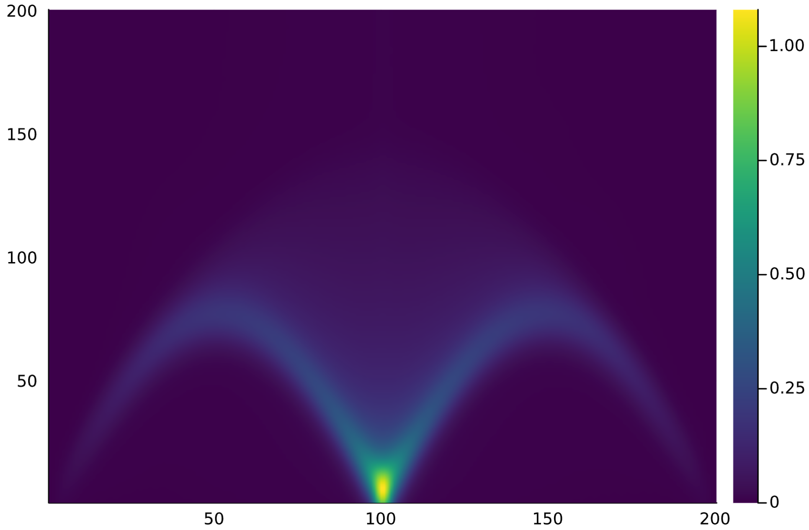
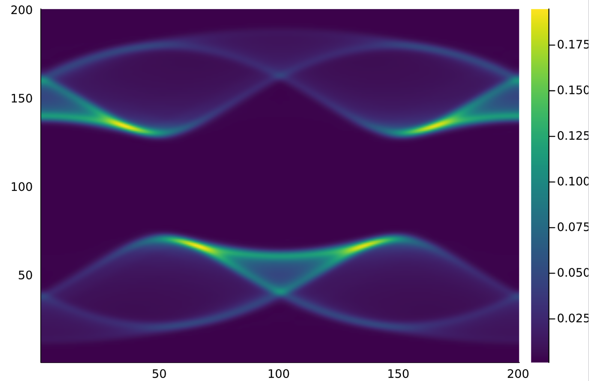

Spectral Functions
This page starts from real-space, real-time correlators and transforms them to momentum-frequency data.
For a one-dimensional system, the transform has the form
\[G(k,\omega) = \frac{1}{(2\pi)^2} \int dt \int dx \, G(x,t) e^{-i(kx-\omega t)} .\]
On finite data, fourier_kw performs the corresponding discrete sum and can apply a damping window to reduce finite-time ringing.
Compute Real-Time Data
using TensorKit
using MPSKit
using MPSKitModels: FiniteChain
using DynamicalCorrelators
N = 32
filling = (1, 1)
H = hubbard(Float64, SU2Irrep, U1Irrep, FiniteChain(N);
t = 1.0, U = 8.0, filling = filling)
ψ0 = randFiniteMPS(ComplexF64, SU2Irrep, U1Irrep, N; filling)
gs, envs, ϵ = dmrg2(ψ0, H, [128, 256, 512])
times = 0:0.05:20
tdvp_cbe = myTDVP1_CBE(D = 512)
sp = S_plus(Float64, SU2Irrep, U1Irrep; filling)
gf_rt = dcorrelator(gs, H, sp, 1:N;
times,
tdvp1 = tdvp_cbe,
tdvp2 = tdvp_cbe,
gf_path = "gf_spin",
)For one source channel, pass an integer id:
gf_rt_site = dcorrelator(gs, H, sp, div(N, 2); times, tdvp1 = tdvp_cbe)The current dcorrelator interface evolves one source operator at a time. Source ids 1:N select the greater contribution, while N+1:2N select the lesser contribution term used in the retarded combination.
Momentum-Frequency Transform
Define real-space positions, momenta, and frequencies:
rs = [[Float64(i)] for i in 1:N]
ks = [[k] for k in range(-pi, pi; length = 121)]
ws = range(-10, 10; length = 501)Then transform:
gf_kw = fourier_kw(gf_rt, rs, times, ks, ws; broadentype = (0.05, "G"))For a fermionic spectral function, a common postprocessing step is:
Akw = -imag.(gf_kw) ./ piThe exact sign and trace convention depends on how the Green's function was assembled.
Example Spectra
The following figures show typical momentum-frequency outputs after applying the transform and spectral-function postprocessing:


Damping Windows
Finite-time data usually needs broadening or windowing:
| Code | Window |
|---|---|
"G" | Gaussian |
"L" | Lorentzian |
"B" | Blackman |
"P" | Parzen |
Examples:
gf_kw_gaussian = fourier_kw(gf_rt, rs, times, ks, ws;
broadentype = (0.05, "G"))
gf_kw_lorentzian = fourier_kw(gf_rt, rs, times, ks, ws;
broadentype = (0.10, "L"))Choose a damping scale comparable to the desired frequency resolution. Stronger damping suppresses ringing but broadens peaks.
Real-Space Frequency Data
For local density-of-states style calculations, transform only in time:
gf_rw = fourier_rw(gf_rt, times, ws; broadentype = (0.05, "G"))Multi-Orbital or Clustered Sites
For systems where several MPS sites should be treated as one physical unit, pass regroup:
regroup = [[2i - 1, 2i] for i in 1:(N ÷ 2)]
gf_kw_orbital = fourier_kw(gf_rt, rs, times, ks, ws;
regroup = regroup,
broadentype = (0.05, "G"),
)Use this for bilayer or multi-band layouts where the MPS ordering contains several orbitals per unit cell.
Static Structure Factor
For equal-time correlations:
Sk = static_structure_factor(ss, rs, ks)where ss is the real-space static correlation matrix.